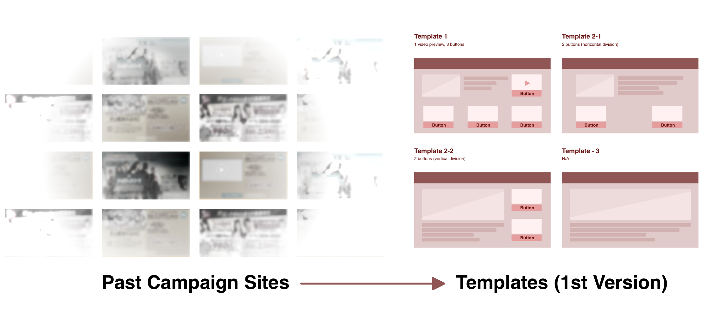
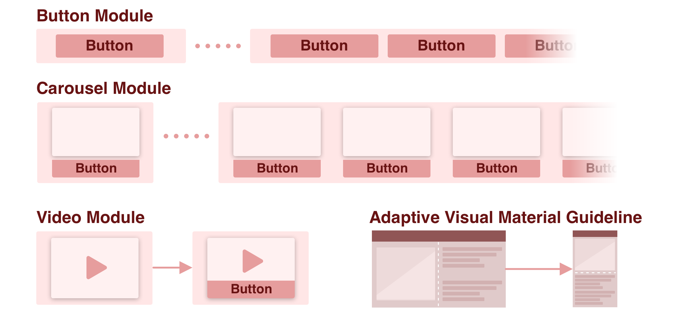
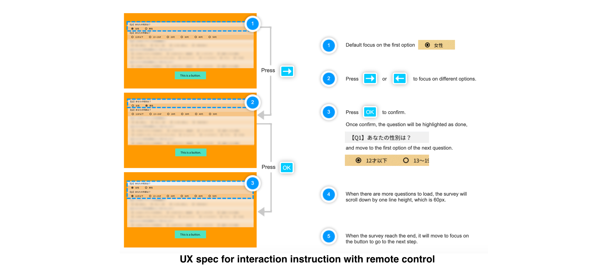
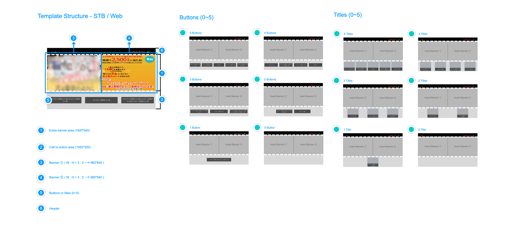
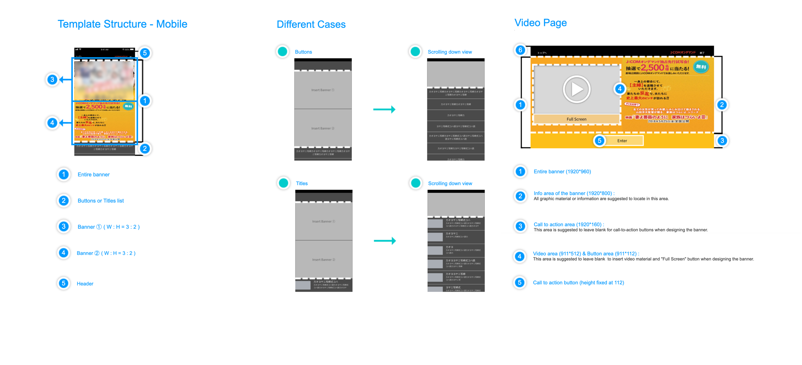
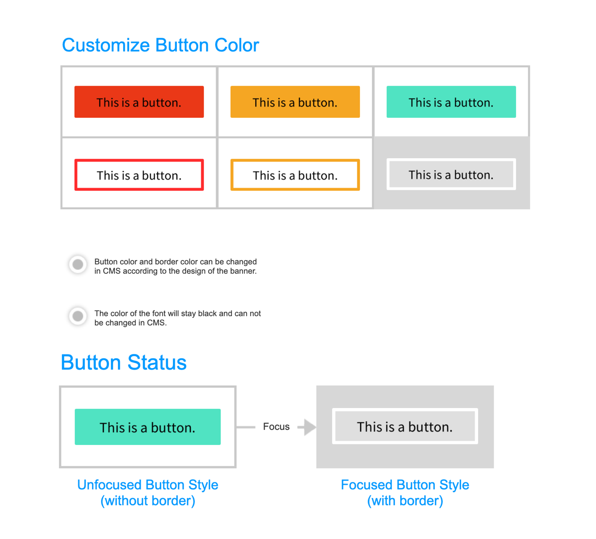

UI Solution for Premiere Campaigns
OVERVIEW
A Japanese cable network service provider aimed to build a “Japanese Netflix, in order to compete in the growing OTT market. The product scope included TV APP operated on set-top box, web APP, and mobile APP.
As an intern designer, I was assigned to tackle the interface for premiere campaigns, which is the campaign for users to subscribe the newly launched contents for free. However, according to the campaign mechanism of the cable network company, it tended to have multiple customized interaction, such as trailer preview, recommendation, links to other promotions, etc…, which made it difficult for the team to develop a specific template to fit the future campaigns. Therefore, my role was to research the possibility to build the template that could fulfill the varied demand of the campaigns through different devices.
COLLABORATE WITH
Account Manager｜Jennifer Yamazaki
Product Manager｜Chien Huang
Design Supervisor｜Ludan Chuang
Senior Designer｜Valentine Lee
Developers of STB / iOS / Andorid
MY ROLE
User research
User Flow
Wireframing
Prototyping
APPROACH
Phase 1. Categorize the different interactions and features
Started from scratch, the project manager and I literally printed out the UI of every past customized campaigns to find the common traits between each others.
In the first version, based on the the information we had dug into, I delivered 4 templates with fixed CTAs and video preview feature, however, the company proposed more features that they wanted to be executed on the interface. Therefore, we went to developers and the UX designer of CMS in order to come up with a better idea, in order to propose a better integrated template that could be more easily to be co-edited by campaign managers, CMS users, developers, and streaming technique provider.

Phase 2. Create a better rule, instead of following the rule
After clarifying the IA among the stakeholders, we tried to divided the template from the perspective of CMS users, that is, considering whether the campaign needed a video preview or not, and then decided how many CTAs would be used, while the visual material would be presented in a fixed ratio, but self-adaptive in different devices.

Phase 3. Define user status based on TV interaction
Understanding the difference of UI design between TV and smaller devices was essential before delivering the final design. The remote control is heavily involved in the user experience, therefore, the user status needed to be slightly adjusted in UX spec. As well as the color palette choices should avoid pure white, which will make users feel uncomfortable after watching for a long time.

Phase 4. Deliver UX spec and design guideline


UX Spec

Style Guide
RESULT
1+ Cross functional meeting
1 UX spec
1 Design guideline
The portfolio doesn’t owned the copyright of the visual material, thus certain details are blurred.